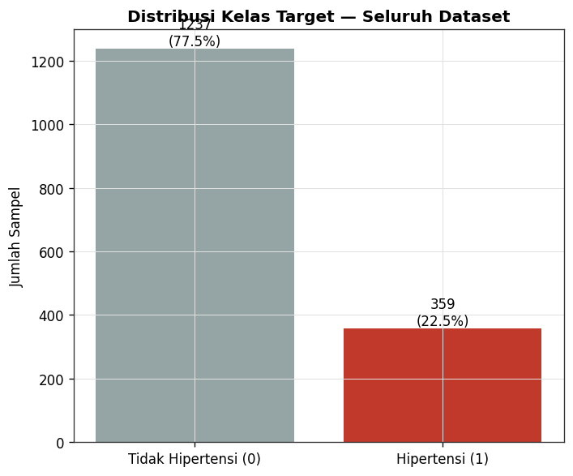
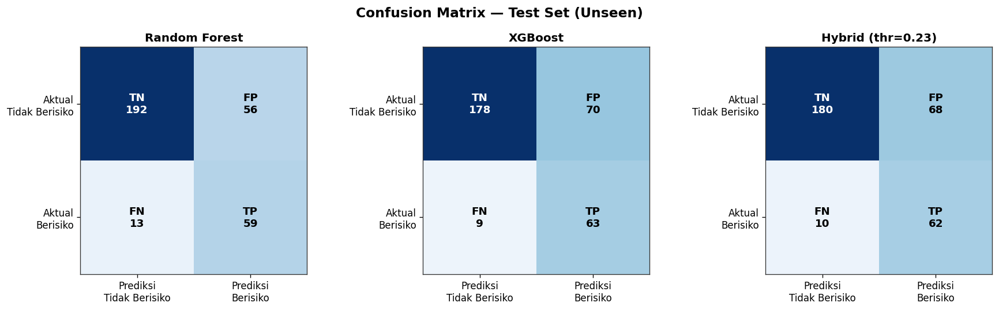
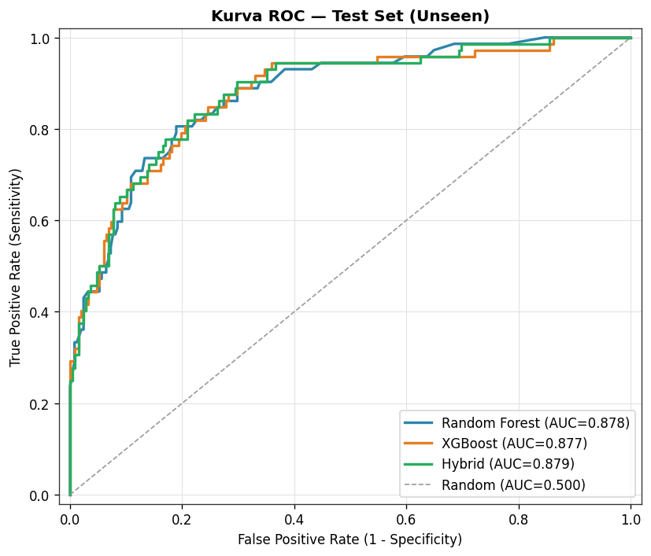
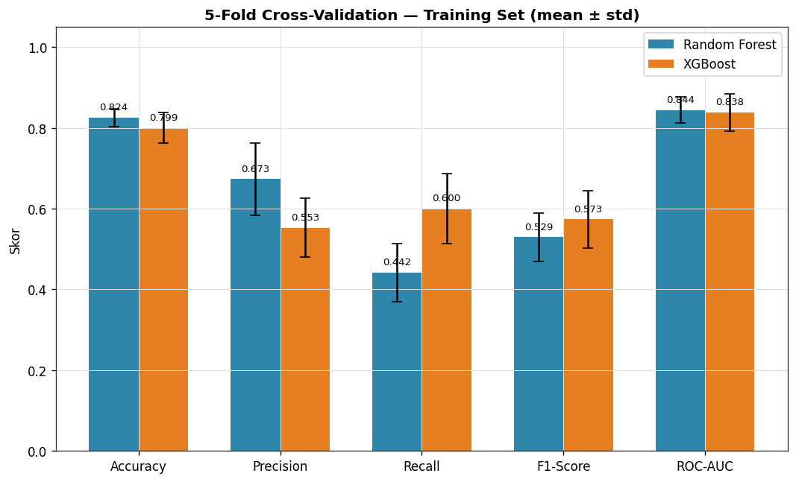
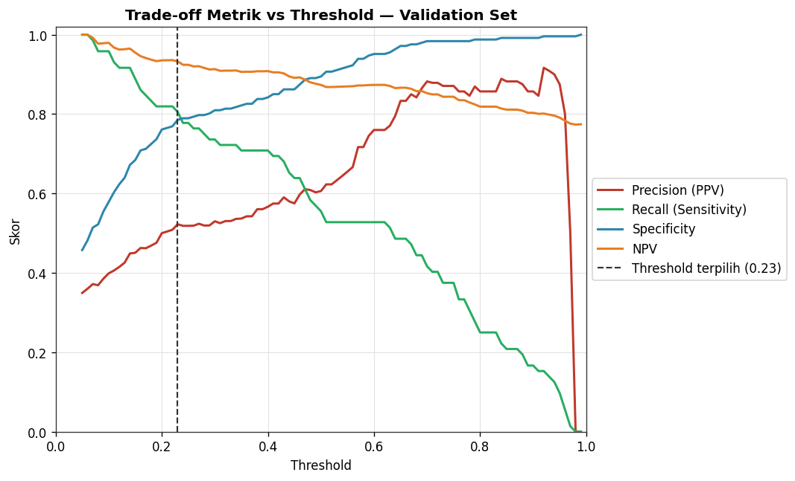
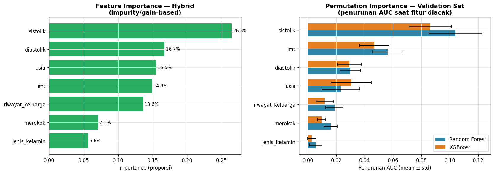

Laporan Training — HiperDiagnosa
Hybrid Random Forest + XGBoostSoft Voting 50:50 (fixed)
Bobot ensemble: RF=0.50 / XGB=0.50 · Threshold optimal: 0.23 · Split: 60/20/20 (train/validation/test), stratified
Dataset: 1596 sampel (train=957, val=319, test=320)
⚠️ Ini laporan performa MODEL STATISTIK untuk alat skrining, bukan validasi klinis. Semua metrik di atas dihitung dari test set yang belum pernah dilihat model selama training/tuning.
Ringkasan Metrik (Test Set)
| Metrik | Random Forest | XGBoost | Hybrid |
|---|
| Accuracy | 0.7844 | 0.7531 | 0.7562 |
| Precision (PPV) | 0.5130 | 0.4737 | 0.4769 |
| NPV | 0.9366 | 0.9519 | 0.9474 |
| Recall (Sensitivity) | 0.8194 | 0.8750 | 0.8611 |
| Specificity | 0.7742 | 0.7177 | 0.7258 |
| F1-Score | 0.6310 | 0.6146 | 0.6139 |
| AUC | 0.8777 | 0.8767 | 0.8793 |
| Youden's J | 0.5936 | 0.5927 | 0.5869 |
Distribusi Data
Distribusi Kelas Target

Perbandingan Performa
Confusion Matrix (Test Set)

Kurva ROC (Test Set)

5-Fold Cross-Validation (Training Set)

Proses Tuning
Pencarian Threshold

Feature Importance
Feature Importance (Impurity/Gain vs Permutation)
